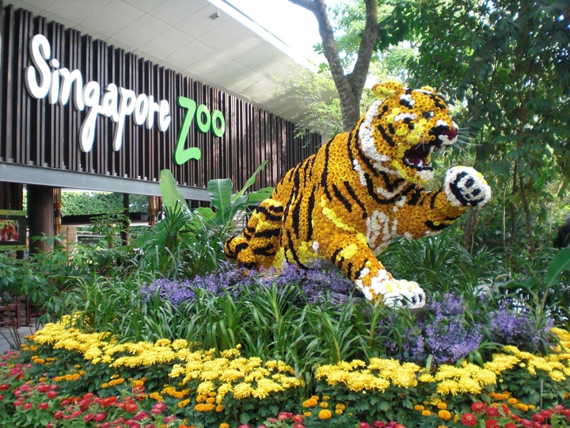
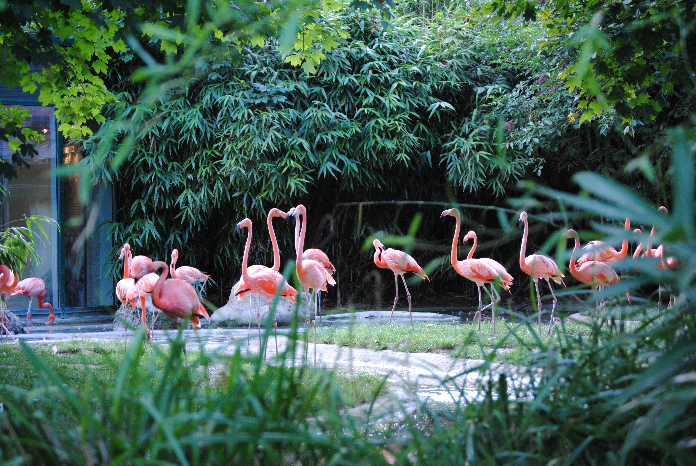

Grădina ZoologicăGrădina zoologică din Singapore ocupă 28 de hectare pe marginea superioară a statului Singapore. Grădina zoologică a fost construită la un cost de 9 milioane de dolari acordat de guvernul Singapore și a fost deschisă la 27 iunie 1973. Este deținută de Wildlife Reserves Singapore, care gestionează și Night Safari, River Safari și Jurong Bird Park . Există aproximativ 315 de specii de animale în grădina zoologică, dintre care aproximativ 16% sunt considerate specii pe cale de dispariție. Grădina zoologică atrage peste 2 milioane de vizitatori în fiecare an. De la început, grădina zoologică din Singapore a urmat tendința modernă de afișare a animalelor în exponate naturaliste, „deschise”, cu bariere ascunse, șanțuri și sticlă între animale și vizitatori. Găzduiește cea mai mare colonie captivă de urangutani din lume. Animalele periculoase care pot urca bine sunt adăpostite în incinte amenajate cu fațadă de sticlă. Grădina zoologică nu s-a extins dincolo de cele 28 de hectare inițiale. Cu toate acestea, 40 de hectare de pădure secundară au fost ulterior transformate în Night Safari. Terenul rămas neamenajat, a fost păstrat ca teren împădurit. Grădina zoologică oferă, de asemenea, diverse moduri de plimbări disponibile în incintă: tramvaie, animale, plimbări cu barca, ponei și căruțe . De asemenea, pot fi închiriate cărucioare, vagoane și scaune cu rotile. |